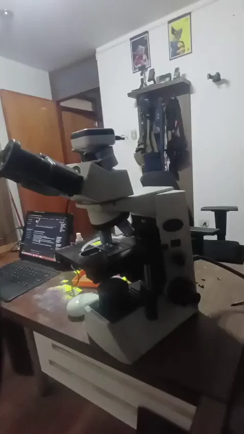

Rotación Cinemática 360° • 60 FPS
Visor Interactivo 360 Grados
Arrastra con el ratón o desliza con el dedo para girar el microscopio en 360°. Inspeccione la óptica trinocular, los objetivos, la platina y la cámara digital de alta definición.
Pieza Quirúrgica
Macroscopía y Márgenes
Documentación de cortes
Ángulo: 0° • Frente
|
36 Fotogramas UHD (0.99 MB)

Arrastre horizontalmente para rotar
Perspectiva: Cabezal trinocular y torreta de objetivos
0°
0°
360°
Microscopio de Grado Médico
Sistema óptico con objetivos plan-acromáticos para diagnóstico histopatológico oncológico.
Digitalización y Telepatología
Cámara digital de alta resolución montada en tubo trinocular para captura de microfotografías.
Carga Instantánea WebP
Los 36 fotogramas pesan menos de 1 MB en conjunto, cargando al instante en smartphones 4G.